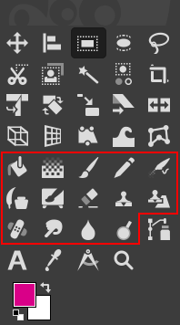
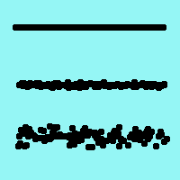
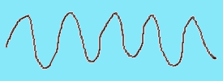
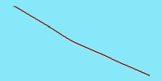
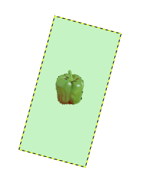
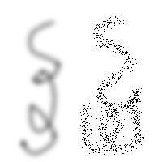
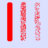
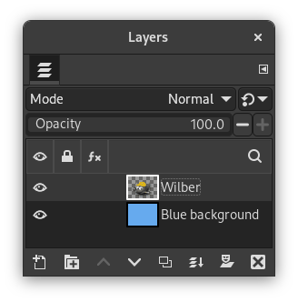
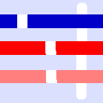
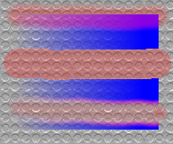

To access these tools, select → from the main menu.
The GIMP Toolbox includes fourteen “paint tools”. By default they are shown together in five groups, but this can be disabled in Toolbox Preferences by unchecking Use tool groups.
Figure 14.27. The Paint Tools in the Toolbox

The default view groups similar tools together. The paint tools groups are inside the red square.

The paint tools in the toolbox in ungrouped view inside the red area.
The feature they all have in common is, that all of them are used by moving the pointer across the image display, creating brush-strokes. Five of them behave like the intuitive notion of “painting” with a brush. Pencil, Paintbrush, Airbrush, and MyPaint brush are called “basic painting tools” or brush tools.
-
The Pencil Tool.
-
The Paintbrush Tool.
-
The Airbrush Tool.
-
The Ink tool.
-
The MyPaint Brush Tool.
The other tools use a brush to modify an image in some way rather than paint on it:
-
the Bucket Fill Tool fills with color or a pattern;
-
the Gradient Tool fills with gradients;
-
the Eraser Tool erases;
-
the Clone Tool copies from a pattern, or image;
-
the Heal Tool corrects small defects;
-
the Perspective Clone Tool copies into a changed perspective;
-
the Blur/Sharpen Tool blurs or sharpens;
-
the Smudge Tool smears;
-
and the Dodge/Burn Tool lightens or darkens.
The advantages of using GIMP with a tablet instead of a mouse probably show up more clearly for brush tools than anywhere else: the gain in fine control is invaluable. These tools also have special “Pressure sensitivity” options that are only usable with a tablet.
In addition to the more common “hands-on” method, it is possible to apply paint tools in an automated way, by creating a selection or path and then “stroking” it. You can choose to stroke with any of the paint tools, including nonstandard ones such as the Eraser, Smudge tool, etc., and any options you set for the tool will be applied. See the section on Stroking for more information.
- Ctrl
-
Holding down the Ctrl key has a special effect on every paint tool. For the Pencil, Paintbrush, Airbrush, Ink, and Eraser, it switches them into “color picker” mode, so that clicking on an image pixel causes GIMP's foreground to be set to the active layer's color at that point (or, for the Eraser, GIMP's background color). For the Clone tool, the Ctrl key switches it into a mode where clicking sets the reference point for copying. For the Blur/Sharpen tool, the Ctrl key switches between blur and sharpen modes; for the Dodge/Burn tool, it switches between dodging and burning.
- Shift
-
Holding down the Shift key has the same effect on most paint tools: it places the tool into straight line mode. To create a straight line with any of the paint tools, first click on the starting point, then press the Shift key. As long as you hold it down, you will see a thin line connecting the previously clicked point with the current pointer location. If you click again, while continuing to hold down the Shift key, a straight line will be rendered. You can continue this process to create a series of connected line segments.
- Ctrl+Shift
-
Holding down both keys puts the tool into constrained straight line mode. This is similar to the effect of the Shift key alone, except that the orientation of the line is constrained to the nearest multiple of 15 degrees. Use this if you want to create perfect horizontal, vertical, or diagonal lines.

Many tool options are shared by several paint tools: these are described here. Options that apply only to one specific tool, or to a small number of tools, are described in the sections devoted to those tools.
- Mode
-
The Mode drop-down list provides a selection of paint application modes. As with the opacity, the easiest way to understand what the Mode setting does is to imagine that the paint is actually applied to a layer above the layer you are working on, with the layer combination mode in the Layers dialog set to the selected mode. You can obtain a great variety of special effects in this way. The Mode option is only usable for tools that can be thought of as adding color to the image: the Pencil, Paintbrush, Airbrush, Ink, and Clone tools. For the other paint tools, the option is always disabled. A list of modes can be found in Section 2, “Layer Modes”.
In this list, some modes are particular and are described below.
- Opacity
-
The Opacity slider sets the transparency level for the brush operation. To understand how it works, imagine that instead of altering the active layer, the tool creates a transparent layer above the active layer and acts on that layer. Changing Opacity in the Tool Options has the same effect that changing opacity in the Layers dialog would have in the latter situation. It controls the “strength” of all paint tools, not just those that paint on the active layer. In the case of the Eraser, this can come across as a bit confusing: it works out that the higher the “opacity” is, the more transparency you get.
- Brush
-
The brush determines how much of the image is affected by the tool, and how it is affected, when you trace out a brushstroke with the pointer. GIMP allows you to use several different types of brushes, which are described in the Brushes section. The same brush choices are available for all paint tools except the Ink tool, which uses a unique type of procedurally generated brush. The colors of a brush only come into play for tools where they are meaningful: the Pencil, Paintbrush, and Airbrush tools. For the other paint tools, only the intensity distribution of a brush is relevant.
- Size
-
This option lets you to modify precisely the size of the brush. You can use the arrow keys to vary by ±0.01 or the Page-Up and Page-Down keys to vary by ±1.00. You can obtain the same result if you have correctly set your mouse-wheel in the Preferences. See How to vary the size of a brush
- Aspect Ratio
-
This determines the ratio between the height and the width of the brush. The slider is scaled from -20.00 to 20.00 with the default value set to 0.00. A negative value from 0.00 to -20 will narrow the height of the brush while a positive value between 0.00 and 20.00 indicates the narrowing rate of the width of the brush.
- Angle
-
This option makes the brush turn round its center, clock-wise. This is visible if the brush is not circular or made from a rotated figure.
- Spacing
-
This option sets the distance between the brush marks in a stroke.
- Hardness
-
Modifies the size of the brush's hard center.
- Force
-
Modifies the “gain” of the brush: gain is a secondary Opacity multiplier that can increase or decrease the strength of the brush during its operation (distinct from the Opacity setting, which is applied to the operation as a whole). Force values below 50% reduce the brush's effect relative to its preview shown in the Tool Options; values above 50% increase the effect (up to 2x at Force=100%) instead.
For standard brush types (i.e. parametric brushes created by the Brush Editor), Force values above 50% effectively expand the opaque center of that brush similar to (but more subtle than) increasing the Hardness of that brush. (The exact relationship between Force and Hardness in this case is complicated.)
For other (raster or image based) brush types, Force values above 50% may show little to no effect depending on the specific brush used, as these brushes often contain maximum opacity to begin with (which cannot be increased further, only decreased).
- Enable dynamics
-
When you enable this option multiple dynamics related settings will appear below it. Brush dynamics let you map different brush parameters to several input dynamics. They are mostly used with graphic tablets, but some of them are also usable with a mouse.
You can read more about dynamics in Dynamics
When stroking paths and selections using a paint tool there is an option to select “Emulate brush dynamics”. That means that when you stroke, brush pressure and velocity are varying along the length of the stroke. Pressure starts with zero, ramps up to full pressure and then ramps down again to no pressure. Velocity starts from zero and ramps up to full speed by the end of the stroke.
- Dynamics Options
-
These options are described in Dynamics Options
- Apply Jitter
-
You know “spacing” in brush strokes: strokes are made of successive brush marks which, when they are very near, seem to draw a continuous line. Here, instead of being aligned brush marks are scattered over a distance you can set with the slider.
Figure 14.32. “Jitter” example

From top to bottom: without jitter, jitter = 1, jitter = 4.
Jitter is also available in the Paint Dynamic Editor where you can connect jitter to the behavior of the brush.
- Smooth Stroke
-
This option doesn't affect the rendering of the brush stroke but its “shape”. It takes away the wobbles of the line you are drawing. It makes drawing with a mouse easier.
When this option is checked, two setting areas appear, Quality and Weight. You can change the default values to adapt them to your skill.
High weight values rigidifies the brush stroke.
Table 14.2. “Smooth Stroke” example trying to draw with the mouse
“Smooth Stroke” setting
Straight line
Sine curve
Unchecked 

Default 

Maximum 

- Lock brush to view
-
When you are working on an image that is bigger (in pixels) than your screen, you have to zoom in and out a lot. This option allows a very natural "iterative refinement" process with no need to repeatedly ask the application to change brush size as you go between the broad strokes and the detailing.
If the brush size is relative to the canvas (option unchecked), zooming in makes the brush zoomed also and it appears larger (takes up more pixels on the screen). If you're working with a 300 pixels radius brush and you zoom in from 12% to 100%, the brush is now half the size of your screen! So you have to shrink the brush back down.
If the brush size is relative to the screen (option checked), then when you zoom in, the size of the displayed brush doesn't change, it looks smaller and so you can work on tiny details.
Figure 14.33. “Lock brush to view” example

An image displayed at 50% zoom so the whole image is visible. The “Lock brush to view” option is not checked and the brush size is set to 100 pixels high in the toolbox.

Part of the image at 200% zoom. The “Lock brush to view” option is not checked and the brush size is set to 100 pixels high in the toolbox. We paint with the pencil and the brush stroke of the selected pepper brush is displayed as 200 pixels high due to the zoom.

Part of the image at 200% zoom. The “Lock brush to view” option is checked and the brush size is set to 100 pixels high in the toolbox. We paint with the pencil and the brush stroke of the selected pepper brush is displayed as 100 pixels high due to the setting.
"Lock brush to view" can also be used to lock brush to view rotation:
Figure 14.34. “Lock brush to view” rotation example

The “Lock brush to view” option is checked and we rotate the view 15° clockwise. The brush stroke rotates with the view.

The “Lock brush to view” option is not checked and we rotate the view 15° clockwise. The brush stroke does not rotate with the view.
- Incremental
-
Applies the effect incrementally as the mouse pointer moves.
The incremental checkbox does not seems to work as everyone expect. If it is deactivated (the default value) the maximum effect of a single stroke is determined by the opacity set in the opacity slider. If the opacity is set to less than 100, moving the brush over the same spot will increase the opacity if the brush is lifted in the meantime. Painting over with the same stroke has no such effect. If Incremental is active the brush will paint with full opacity independent of the slider's setting. This option is available for all paint tools except those which have a “rate” control, which automatically implies an incremental effect. See also Section 2, “Layer Modes”.
- Expand Layers
-
When enabled, this automatically enlarges the layer when painting outside the borders of the layer. If it is enabled, several additional settings appear below it.
Note that this doesn't allow you to extend a layer beyond the size of the image canvas. To change the size of the canvas see Canvas Size.
- Amount
-
The amount of pixels to add in the direction you are painting.
- Fill with
-
Here you can select how the new expanded area of the layer is filled. These are the same choices as in the New Layer Dialog.
- Fill Layer Mask With
-
If the layer you are painting on has a layer mask, that mask will also be extended. This option gives you a choice how to fill the new area of the layer mask. You have a choice between White (full opacity) and Black (full transparency).

The following examples demonstrate some of GIMP's paint modes:
- Dissolve
-
Figure 14.35. Dissolve mode example

Two brush-strokes made with the Airbrush, using the same fuzzy circular brush. Left: Normal mode. Right: Dissolve mode.
For any paint tool with opacity less than 100%, this very useful mode doesn't draw transparency but determines the probability of applying paint. This gives nice patterns of dots to paint-strokes or filling.
Figure 14.36. Painting in Dissolve mode

This image has only the background layer and no Alpha channel. The background color is sky blue. Three strokes with Pencil and various opacities: 100%, 50%, 25%. Foreground color pixels are scattered along brushstroke.
- Behind
-
Figure 14.37. Example for blending mode “Behind”
Wilber over a blue background layer

Layers Dialog

Filled with pattern
This mode applies paint only to transparent areas of the layer: the lower the opacity, the more paint is applied. Thus, painting opaque areas has no effect; painting transparent areas has the same effect as normal mode. The result is always an increase in opacity. Of course none of this is meaningful for layers that lack an alpha channel.
In the above example image, Wilber is on the top layer, surrounded by transparency. The lower layer is solid light blue. The Bucket Fill Tool was used, with the Fill whole selection option checked and the entire layer was selected. A pattern was used to paint with the Bucket Fill tool.
Figure 14.38. Painting in “Behind” mode

This image has two layers. The upper layer with two blue stripes is active. We paint three vertical brush strokes in red color with the pencil tool at 100%, 50%, 25% transparency (from left to right): only transparent or semi-transparent pixels of the layer are painted.

Resulting image.
- Color Erase
-
Figure 14.39. Example for blending mode “Color erase”
Wilber over a blue background layer
White foreground color erased
This mode erases the foreground color, replacing it with partial transparency. It acts like the Color to Alpha filter, applied to the area under the brushstroke. Note that this only works on layers that possess an alpha channel; otherwise, this mode is identical to Normal.
In the above example image, the color of the Bucket Fill tool was white, so white parts of Wilber were erased and the blue background shows through.
This image below has three horizontal stripes and has only one layer, the background layer. Background color is sky blue. We add three vertical brush strokes with the pencil tool:
-
On the left, a vertical brush stroke with the exact color of the blue stripe: only this blue color is erased.
-
In the middle, a vertical brush stroke with the exact color of the red area: only this red color is erased, whatever its transparency. Erased areas are made transparent.
-
On the right, a vertical brush stroke with the sky blue color of the layer background: only this color is erased.
Figure 14.40. Painting in “Color Erase” mode

Vertical brush strokes painted in blue (on the left), in red (in the middle), in the background color (on the right).
-
- Overwrite
-
Figure 14.41. Painting in “Overwrite” mode

Example image with two layers: the upper layer contains a blue gradient with different brushstrokes painted across them, in Normal mode (top) and Overwrite mode (middle, bottom).
This mode entirely foregoes the usual concept of opacity and instead treats it as simply another “color” channel to be painted: uniquely, it can replace fully opaque areas with semi-transparent colors.
When used with the Pencil tool (or a tool with the “Hard Edge” toggle enabled), Overwrite will effectively ignore any pre-existing content under the brushstroke. It can similarly be used to paint a selected region with a Pattern or Gradient fill without regard for (or blending with) previous content.
In the above example, the image has a patterned background layer, with a blue gradient layer above it. The topmost red stroke is drawn with the Paintbrush tool at 25% Tool Opacity and Normal mode, which blends with the blue gradient to yield a purple result.
The lower two strokes are also drawn wih 25% Tool Opacity, but in Overwrite mode instead: they “cut through” the blue gradient in its entirety and allow the background pattern to be visible through their transparency alone, even in regions where the gradient is fully opaque.
Advanced users may be interested to know that most paint tools actually operate at a sub-pixel level, in order to avoid producing jagged-looking results. One consequence of this is that even if you work with a hard-edged brush, such as one of the Circle brushes, pixels on the edge of the brushstroke will only be partially affected. If you need to have all-or-nothing effects (which may be necessary for getting a good selection, or for cutting and pasting, or for operating pixel-by-pixel at a high zoom level), use the Pencil tool, which makes all brushes perfectly hard and disables sub-pixel anti-aliasing.